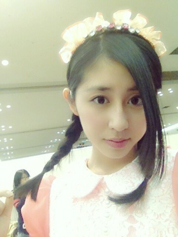
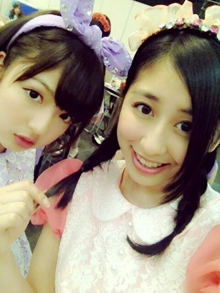

| 2013/04 27 Sat | 春(´>∀<｀)ゝ |
ちはるーむへようこそ！

春...だねえ૮(⁎❛ ˚̫ ❛⁎)ა
みつあみ。

まあや、遅くなったけどお誕生日おめでとう

ほんっとにね、可愛い可愛いまあやが大好きなんだよ(＊･ω･＊)
まあや見てるとしあわせなキモチ♡
これからも純粋なひよこまあやでいてね！

大好きよ♡♡
そして！設楽さん！
同じく遅くなってしまったけど
お誕生日おめでとうございます\( ˆoˆ )/
設楽さんには番組で
「テレビゲーム、タノシー！」
という名言を残してくださったり
斎藤家の歌を歌ってくださったり
感謝しております！笑
ちなみに、設楽さんに渡したバースデーカードの中表紙は
ちはるが書かせていただきましたよ！
時間なくて簡単なのしか書けなかったけど喜んでくれたら嬉しいです(o^^o)
前回、コメントありがとう。
正直、腐ってしまいたくなる時もあるけど...
プリンシパルっていうチャンスの場もあるし
応援してくれている皆さんがいるし
これからも頑張ります！
ちはるーむめいとの皆さん、
いつもありがとう。
もうすぐ5th最後の個握ってことでっ
titty&Coでお洋服も買いました！
飛鳥と買いました！笑
それでね？
髪型も考えてるんだけどいいの思い浮かばないから
皆さんに考えてほしいんよ！\( ˆoˆ )/
集計して多かった髪型するねー♡
みんなっ待ってるぞっ

乃木ここ！
これから稽古でーす
飛鳥と行ってたらゆったん、みさみさ、とまとに会ったから
一緒に行ってくるね(＊･ω･＊)
毎日頑張ってるよ！！
ばいるんっ
るんるんっ
ちはるんっ
(´>∀<｀)ゝ
コメント(133)
2013/04/27 11:54